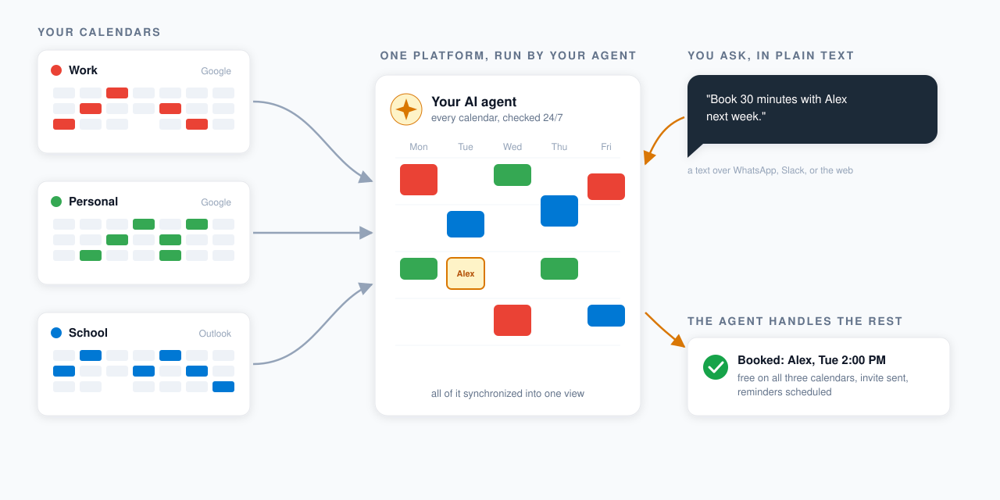
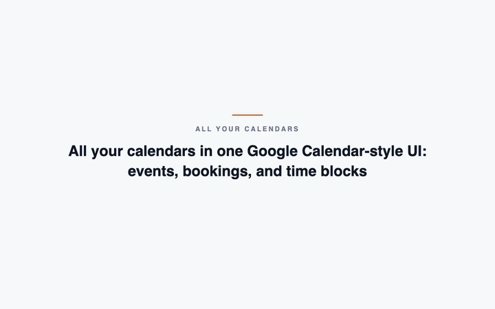

All your calendars, run by an AI agent you can text
Stop cross-referencing calendars to find a free slot, this agent syncs them all, checks availability, and books for you 24/7

A scheduler, plus an agent who runs it
All your calendars, one UI
Every Google and Outlook account in one Google Calendar-style view: events, bookings, time blocks
Text your agent to book
Text your agent the when and where instead of clicking, it never mistakes AM for PM
Visitors just ask if you're free
They just ask "free on Tuesday?" and the agent replies with open slots, then books their pick
A Calendly-style booking page
Visitors only see slots open across every calendar, rechecked at booking time so nothing double-books
WhatsApp and email reminders
You and your attendees get meeting reminders, with retries so a failed send is never dropped
Your agent, in your chats
Invite it to WhatsApp or Slack to create, move, or cancel meetings over text, and get instant booking alerts

The tour: dashboard, agent-by-text, booking page, reminders, chats, and a Chrome extension for any Calendly page.
Juggling almost ten calendars was eating my head
I juggle almost ten calendars, so when someone asks when I'm free, cross-referencing all of them for a time that works burns real time and mental energy
And adding events by hand, I kept mistaking AM for PM. Those little frustrations are why I built this: an agent that watches every calendar, answers availability, and books end to end
It's free and open source, syncs all your calendars, runs 24/7, and keeps your data on your own deployment. I use it for every meeting, so book a time with me and you'll be talking to it
Hunter Zhang, hunterzhangconsulting.com